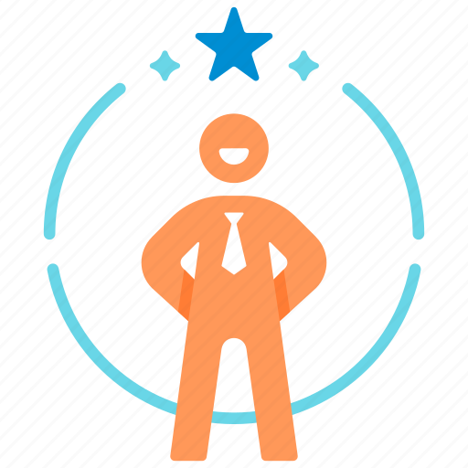

How To Boost your self-confidence
Self-confidence is essential for personal growth and success. By believing in yourself and your abilities, you can tackle challenges with vigor and embrace new opportunities fearlessly. Here are eight effective ways to boost your self-confidence and lead a more fulfilling life.
Acknowledge Achievements:
Recognize and celebrate your accomplishments, no matter how small. Positive reinforcement will lay the foundation for building self-confidence.
Set Realistic Goals:
Break down your objectives into manageable steps and celebrate each milestone you achieve. Seeing progress will boost your belief in your abilities.
Practice Self-Compassion:
Be kind to yourself and treat mistakes as learning opportunities. Embrace self-improvement with a positive attitude.
Embrace Strengths and Weaknesses:
Accept both your strengths and weaknesses. Focus on enhancing your strengths while working on improving weaknesses.
Step Out of Your Comfort Zone:
Challenge yourself by trying new experiences and facing your fears. You'll discover hidden talents and strengths.
Improve Knowledge and Skills:
Continuously learn and develop your expertise. Increased proficiency will boost your self-confidence.
Surround Yourself with Positivity:
Seek supportive and positive individuals who encourage your growth and success. Avoid toxic relationships.
Celebrate Failures and Learn:
View failures as stepping stones for growth. Learn from them and use the experience to improve future endeavors.
Building self-confidence is a gradual process involving self-awareness and self-acceptance. By implementing these eight strategies, you can empower yourself to become a more confident and fulfilled individual, capable of embracing life's challenges with assurance and enthusiasm. Remember, self-confidence is a journey, and with persistence, you can achieve remarkable results.